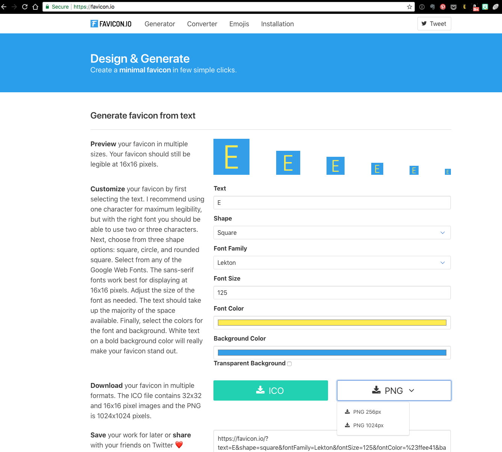
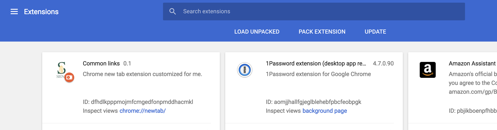

Creating a chrome extension with common links
Goals
Learn about...
- Modifying HTML and CSS
- Creating a favicon
- Working with a JSON file
- A little about javascript
- Deploying a google chrome extension
Key Concept
The purpose of this lesson is to develop a custom "launch page" that can be incorporated into the Chrome Home new tab extension.
In-Class
Activity
Download the files
- Open the extensions project on replit.
- You should see an images directory, a docs directory and the files manifest.json, README.md, tab.css, index.html, and tab.js.
Modify the HTML
- We will look at the code in index.html as a class.
- Locate an image to use on the page (less than 50KB) and download it into the images directory.
- Once you understand the html, you may start editing the file to incorporate your own links for this page.
- Edit the img tag to reference the image you downloaded.
- Once you have the links you want and the image, we'll move on to the style sheet.
Modify the CSS
- We will look at the code in tab.css as a class.
- Modify tab.css by changing the declarations of
.links,.caption,#clockbox,elementsor any other selector found within. - Be sure to frequently run index.html to see the results of any changes.
Make an icon
- Go to favicon.io to make an icon.
 - Make an icon with your initial, like the one here:

- When you download your design, it creates a zip file containing a directory of various sizes of the image. Since we're using an existing template, we're going to make our images fit the current structure.
- Open up the
favicon.icofile in an image editor (preview or gimp or windows equivalent). - Export your icon image multiple times with multiple sizes:
- An image of size 128x128 to a file named 128x128.png
- An image as 72x72 to a file named e_small.jpg
- An image as 72x72 to a file named rsz_n60-2stack-w_small.png
JSON
- We will step through the JSON powerpoint slides found here: JSON.pptx
- Open the manifest.json file.
- Modify the items noted in red below to customize your extension.
{ "manifest_version": 2, "name": "Custom Web Launcher", "short_name": "Web Launch", "version": "0.4", "description": "A Chrome new tab extension that can be customized each semester. Learn how at the SIGCSE 2018 Chrome Home Workshop.", "icons": { "128": "images/128x128.png" }, "browser_action": { "default_icon": { "16": "images/rsz_n602stackw_ small.png" }, "default_title": "Custom Web Launcher" }, "author": "Denise Case and Doug Hawley", "chrome_url_overrides": { "newtab": "tab.html" }, } - Save manifest.json
Javascript
We will step through the JavaScript powerpoint slides found here: JS.pptx
- Add a background image to your page
- Find a background image you like.
- In index.html, add a static background image by changing
<div id="background">to<div id="background" style="background-image:url(http://bing.com//az/hprichbg/rb/HuangshanClouds_EN-US9460330019_1920x1080.jpg)">where the url of your desired image is located in the parentheses afterurl
- Style your background image with CSS
- In your tab.css file, set style for element with
id="background"to the following (or vary it as you like).#background { height: 100%; opacity: 1.00; background-position: center; background-repeat: no-repeat; background-size: cover; }
- In your tab.css file, set style for element with
- Call your new function when the window is created
- Update the handler for
windows.onloadto call a function that will update the background image. We will add the functionUpdateBackgroundImagein the next section. - To do this, locate the
window.onloadfunction at the bottom of the file tab.js. You will add the call toUpdateBackgroundImageso that yourwindow.onloadfunction now appears as follows:window.onload = function () { UpdateBackgroundImage('https://www.bing.com/HPImageArchive.aspx?format=js&idx=0&n=1') GetClock() setInterval(GetClock, 1000) GetGreeting() setInterval(GetGreeting, 1000) }
- Update the handler for
- Add three new functions
- Still in tab.js, add the new update function and the two helper functions to the end of your JavaScript file.
/** * Update background image with Bing Image of the Day * @param {String} url */ function UpdateBackgroundImage(url) { let xmlhttp = new window.XMLHttpRequest() xmlhttp.onreadystatechange = function () { if (this.readyState == 4 && this.status == 200) { // when done & successful console.log('Response received: ' + this.responseText) var imageURL = ExtractImageURL(JSON.parse(this.responseText)); console.log('Image url: ' + imageURL) SetBackgroundImage(imageURL) } }; xmlhttp.open("GET", url, true) // define the request as a get, to this url, asynchronous xmlhttp.send() // actually send request to server }/** * Extract first image URL from Bing response JSON. * @param {Object} response * @return {String} imageURL */ function ExtractImageURL(response) { var suffix = response.images[0].url return 'http://bing.com/' + suffix }/** * Set background image to imageURL * @param {String} imageURL */ function SetBackgroundImage(imageURL) { document.getElementById("background").style.backgroundImage = 'url("' + imageURL + '"' }
- Still in tab.js, add the new update function and the two helper functions to the end of your JavaScript file.
- Bonus: Add a custom welcome message based on your schedule
- In your index.html file, create a new HTML element with an
id="welcome"just like the element withid="greeting".<span class="border" id="greeting"></span> <span class="border" id="welcome"></span> - Create a
GetWelcome()function. In the function, get a newDate(). Useifstatements andtday[nday](e.g. Mon) to create a "Welcome to Web!" greeting based on your course schedule. Hint: to make it easier to read, you might write one functionisMonOrWed()to which you passndayto find out if it's a web class day, and a second function to determine if the time is between 3:00pm and 4:00pm.let result = false if (tday[nday] === 'Mon' || tday[nday] === 'Wed') {result = true} return result
- In your index.html file, create a new HTML element with an
Deploying your extension
The purpose of this section is to provide an overview of how to deploy a custom Chrome new tab extension to the Chrome store.
- Slides about deployment: Deploy.pptx
- Ensure that you have the three images created above stored in the images folder:
- An image of size 128x128 to a file named 128x128.png
- An image as 72x72 to a file named e_small.jpg
- An image as 72x72 to a file named rsz_n60-2stack-w_small.png
- Verify manifest.json
- Make sure your manifest.json is correct for this version (you can use version 0.0.1 for your first upload, and will increment each updated version after that).
- Check the following fields:
- name
- short_name
- version (recommended: 0.0.1 for the initial release)
- description
- browser_action - make sure it points to your new png files and includes a helpful tooltip.
- author
- make sure index.html is referring to your current index.html file
- Test it locally
- Download all the files into a directory on your computer.
- From that directory, right-click index.html and open it in chrome.
- Use the developer options to open your unpacked project.
- Go to "More Tools -> Extensions" in browser
- Choose "load unpacked" and navigate to your working app folder
 - Open a new tab in Chrome and you should see your page.
- Optional: Zip/pack your project for publishing
Disclaimer: I have not published my web launcher, so I am just relaying the information I was given for this section. I have had no problem using my extension by keeping the app directory on a shared drive such as google drive or dropbox that is accessible from all my computers. Once the extension is installed on a computer's Chrome browser, it will access the copy that is in the shared drive.- Be sure to include the following in your zipfile:
- index.html
- tab.css
- tab.js
- manifest.json
- images folder
- Be sure to include the following in your zipfile:
- Optional: Publish it
Disclaimer: I have not published my web launcher, so I am just relaying the information I was given for this section. I have had no problem using my extension by keeping the app directory on a shared drive such as google drive or dropbox that is accessible from all my computers. Once the extension is installed on a computer's Chrome browser, it will access the copy that is in the shared drive.- Create a new gmail just for this app
- Register and pay for a Google developer account($25)
- Go to your Google Developer Dashboard and add new item (upload your zip file - $5)
Deliverables
No deliverables, but hopefully you have a fully functioning and useful chrome extension giving you quick access to all of your favorite links!